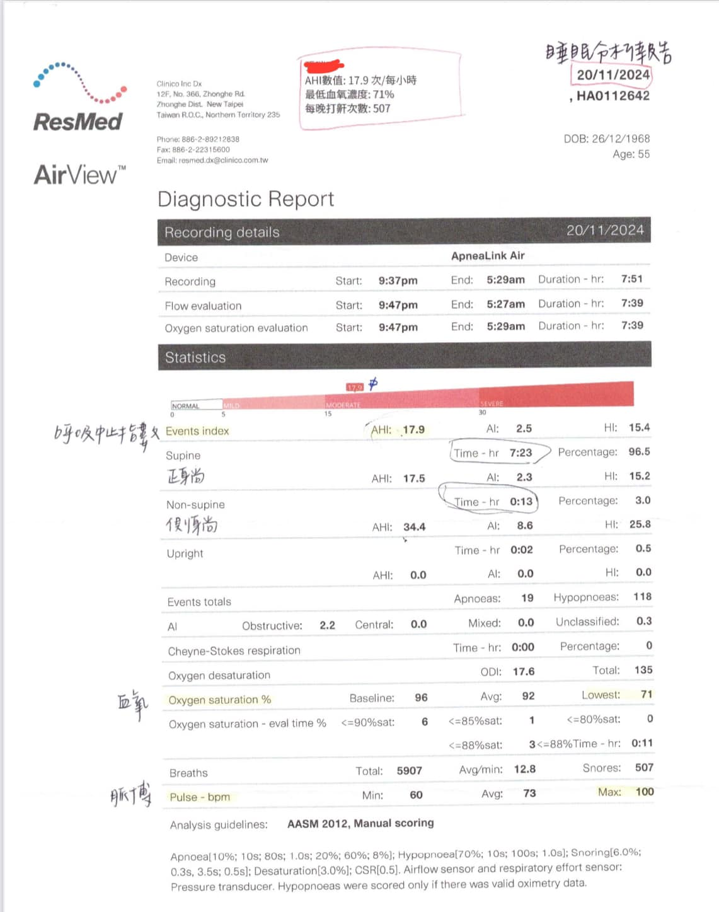
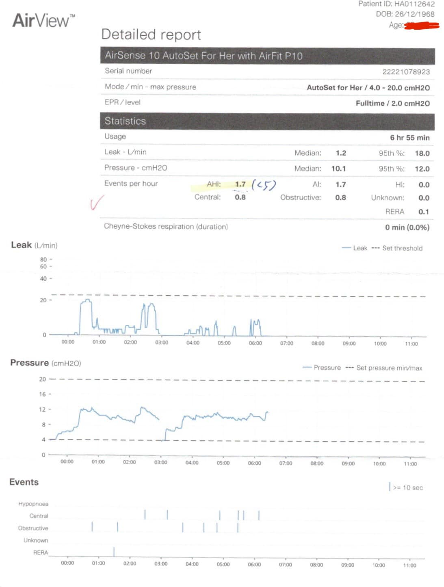

OSA睡眠呼吸中止症是隱藏在許多身體不適背後的大魔王，長期的睡不好進而影響心理精…
OSA睡眠呼吸中止症是隱藏在許多身體不適背後的大魔王，長期的睡不好進而影響心理精神狀態，最終造成長年的身心失調，找半天原因沒抓到病根，最後竟然開始懷疑人生！
非常高興這次幫助到一位長年身心俱疲的大姐，抓到OSA問題，討論後才知道原來7-8年前早就試過戴呼吸器，但仍未獲得改善。到處求助解決方法仍得不到很好的進步。
但透過問診與脈象等診察後，仍勸她再回去測一次睡眠檢測，果然還是OSA，檢測中最低血氧甚至只有71%！
很幸運這次檢測人員很好心地幫忙檢查原有的呼吸器，發現是氧氣壓力值調太大，才造成她即便都戴了呼吸器仍然沒睡好，這次重新調整參數後，這陣子睡的香甜，精神體力與腦袋都得到休養！
👩：我終於有睡到覺的感覺了！
AHI從17.9（中度）降到1.7（正常值是小於5）
困擾20-30年的問題，總算找出問題，讓大姐能好好休息，恢復身心狀態，降低身體慢性發炎，真的是可喜可賀在配合中醫藥的加入幫忙，一定能讓大姐大幅進步🤩🤩🤩
太初中醫診所
中醫師 黃彥鈞

